Krylov subspace methods are widely used in solving partial differential equations and large sparse linear systems. For symmetric systems, CG and MINRES are almost always the optimal choices as efficient solvers. However, for nonsymmetric systems, such as those arising from convection-diffusion equations, the best choice of solvers is much less clearer. Various methods have been proposed for nonsymmetric systems over the years. Notable methods include GMRES [5], QMR [4], TFQMR [3], Bi-CGSTAB [6], QMRCGSTAB [2], etc. Unlike for symmetric case, there is no overall best method, and there is a need of guidelines in choosing these different types methods. The purpose of this study is to perform a systematic comparison of the various methods for linear systems arising from PDE discretizations. We focus on two classes of methods that are based on either nonsymmetric Lanczos iterations or Arnoldi iterations. We analyze the algorithm complexity and present numerical performances of these methods with and without preconditioners, for linear systems from finite difference or finite element discretizations in
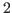
-D and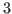
-D.In this study, we first report some theoretical comparisons of the methods with three-term recurrences, including QMR, TFQMR, Bi-CGSTAB and QMRCGSTAB, as well as the methods based on
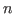
-term recurrence, such as GMRES. Table 1 compares the operation counts per iteration and the storage requirements for these methods, which augment the comparison in [1] with TFQMR and QMRCGSTAB. There is a tradeoff depending on the average number of nonzeros in the matrix versus the number of iterations. We present simple performance models for different classes of linear systems from PDE discretizations based on finite difference or finite element discretizations in 2-D and 3-D to provide practical guidelines in choosing these different Krylov subspace solvers.
| MatVec | Inner | ||||
| Prod. | DAXPY | Prod. | FLOPs | Storage | |
| QMR | 2 | 12 | 2 | 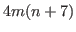 |
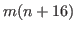 |
| TFQMR | 2 | 10 | 4 | 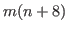 |
|
| Bi-CGSTAB | 2 | 6 | 4 | 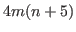 |
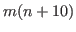 |
| QMRCGSTAB | 2 | 8 | 6 | 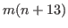 |
|
| GMRES | 1 |
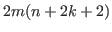 |
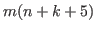 |
To compliment the theoretical analysis, we also report some empirical comparisons of the different methods in terms of their convergence rates with and without preconditioners. We evaluate three preconditioners, including incomplete LU, Gauss Seidel, and Chebyshev polynomials. From the results, we observe that methods GMRES is more robust, with monotonically decreasing residuals, QMRCGSTAB, QMR, and TFQMR are less robust with nearly monotonically decreasing residual, and Bi-CGSTAB is the most efficient but also the least robust, with oscillatory residuals. For these different methods, we observe different accelerations with different preconditioners for different classes of problems. These results help provide some practical guidelines in choosing different preconditioners for different types of linear systems, and also motivate the development of hybrid solvers for sparse linear systems arising from PDE discretizations.